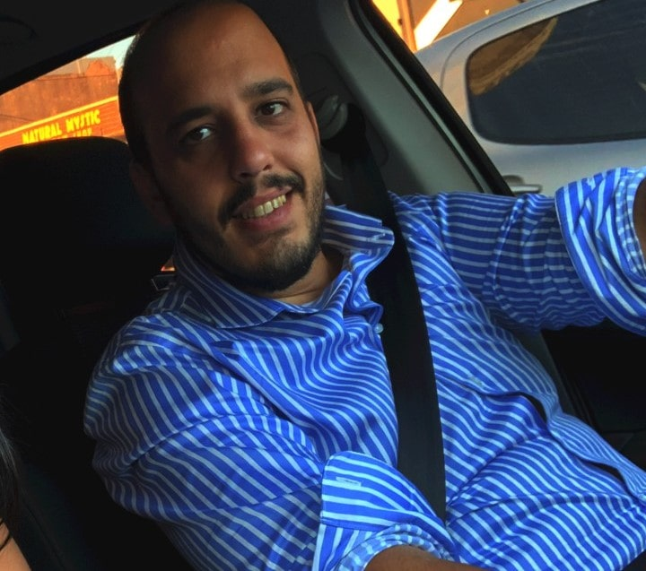

Esteban Vargas

Datos Personales:
Edad: 31
Ubicacion: Gran Buenos Aires - Lomas de Zamora
Telefono: +5411596xxx
Email: egvargas89@hotmail.com
Linkedin: Pagina Personal
Experiencia Laboral
(2007-2012) Soporte Helpdesk
(2012 - Actual) Banco Credicoop Coop.Ltdo - Especialista en Redes y VOIP
Mantener guardias pasivas fuera de operatoria y fines de semana para atender casos críticos que así lo requieran.
Implementar nuevas instalaciones y cambios físicos o lógicos vinculados a las redes y servicios de voz y datos
Interactuar con Control de Red y otros usuarios internos en la interpretación del requerimiento y la confirmación de su corrección.
Propiciar modificaciones que contribuyan a fortalecer la infraestructura Tecnológica a través del Jefe de Operaciones Redes
Objetivo:
Trabajar en un puesto laboral que me permita desarrollar y perfeccionar las habilidades y conocimientos adquiridos durante mi carrera universitaria, ser útil y eficiente en mi puesto de trabajo y fomentar un ambiente de cordialidad entre mis compañeros.
Linux
CCNA Certification
Asterisk Voip
Si te interesa contactarme haga click Aqui